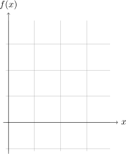
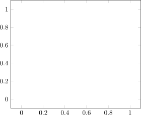
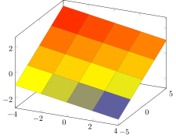

import Pkg; Pkg.add("PGFPlotsX")
using Plots
using PGFPlotsXtikz
0.1 Packages
TikZ can be rendered in Quarto in 2 ways:
- under
.tikzcode chunk using thetikzQuarto extension, - under Julia code chunk using the
PGFPlotsX.jlpackage.
In this section we will be using method 1 for maximum compatibility. The PGFPlotsX.jl package will be reserved for 2D and 3D plots.
Remember to install the extension tikz and to put the filters: -tikz in the yaml section.
1 TikZ extension
1.1 2D Plots in Tikz
\tikz{
% grid
\draw (0,0) grid (8,8)
}1.2 Drawing
\tikz{
\draw[gray!80](0,0)grid (6,5);
\node at (3,4) {$i$};
\node at (1,1) {$k$};
\node at (5,1) {$j$};
\draw [->, very thick] (3.2,3.8) -- (4.8,1.2);
\draw [->, very thick] (4.8,1) -- (1.2,1);
\draw [->, very thick] (1.2,1.2) -- (2.8,3.8);
}1.3 Maze
\begin{tikzpicture}
% grid
\draw[gray!20](0,0) grid (11,11);
% maze
\draw[line width=2pt, cap=round, rounded corners=1pt,draw=black]
(1,1) -| (10,2)--(8,2)
(10,2) |- (8,5)--(8,6) -| (9,7)
(10,4) -- (10,10)
(2,2) -| (1,4) -| (2,6)
(1,4) |- (3,10) -- (3,9)
(2,10)-|(8,9)(8,10)-|(9,8)-|(7,9)
(5,1) |- (7,2) -|(3,2) |-(2,3)
(3,3) |- (4,5)--(4,7)
(4,6) -|(5,8)-|(3,6)
(2,7) |-(6,9) |-(5,5)|-(4,4)|-(5,3)
(6,3)-|(9,4)--(6,4)(7,4)|-(8,7)
((7,6)--(6,6);
% start and end points
\draw[-latex, line width=3pt, red](0.5,1.5)--(1.5,1.5);
\draw[-latex, line width=3pt, red](9.5,9.5)--(9.5,10.5);
\end{tikzpicture}2 TikZ Data Visualizations
2.1 Specify Data Points
\usetikzlibrary {datavisualization}
\begin{tikzpicture}
\datavisualization [school book axes, visualize as smooth line]
data {
x, y
-1.5, 2.25
-1, 1
-.5, .25
0, 0
.5, .25
1, 1
1.5, 2.25
};
\end{tikzpicture}2.2 2D polynomial
\begin{tikzpicture}[domain=0:4]
\draw[very thin,color=gray] (-0.1,-1.1) grid (3.9,3.9);
\draw[->] (-0.2,0) -- (4.2,0) node[right] {$x$};
\draw[->] (0,-1.2) -- (0,4.2) node[above] {$f(x)$};
\draw[color=red,thick] plot (\x,\x) node[right] {$f(x) =x$};
% \x r means to convert '\x' from degrees to _r_adians:
\draw[color=blue,thick] plot (\x,{sin(\x r)}) node[right] {$f(x) = \sin x$};
\draw[color=orange,thick] plot (\x,{0.05*exp(\x)}) node[right] {$f(x) = \frac{1}{20} \mathrm e^x$};
\end{tikzpicture}2.3 Grid
3 Trigonometrical
3.1 Sine wave
3.2 PGFPlotsX version
x = range(-4; stop = 4, length = 5)
y = range(-5; stop = 5, length = 5)
f(x, y) = -x/6 + y/3
@pgf Plot3({
surf,
},
Coordinates(x, y, f.(x, y'))
)
3.3 PGFPlotsx
using Plots;
pgfplotsx() # use this for backend
pl = plot(1:5)
pl2 = plot((1:5).^2)